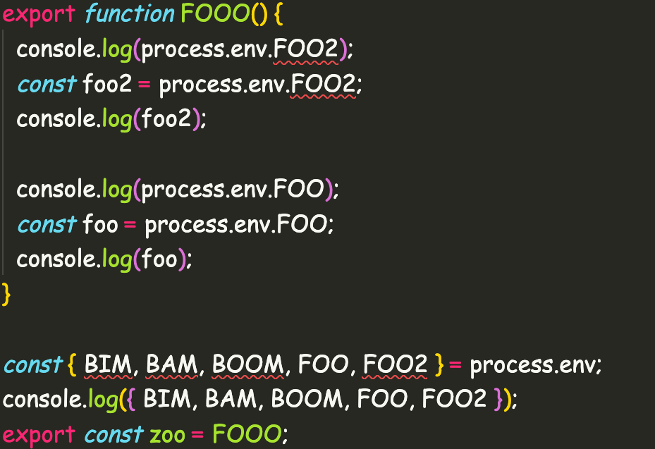

Protecting the Environment (variables)
Who am I?
- Senior Frontend Engineer @ Fairwinds
- Twitch Streamer
- Lazy YouTuber
Where’s the best place for a horse to grow up?
In a stable environment.
What
Syntax Trees
- concrete syntax trees: structures that represent every detail (such as white-space in white-space insensitive languages)
- abstract syntax trees: structures that only represent details relating to the syntactic structure of code (such as ignoring whether a double or single quote was used in languages that support both, such as JavaScript).
Example

Popular Usages of ASTs
- Babel
- Webpack
- Typescript
- ESLint
- TreeSitter
Why don’t environmentalists eat Italian food?
Because they are trying to decrease their Carbonara footprint.
Why
Use Cases
- Compiling
- Transpiling
- Code Analysis
- Editor Tooling
Compiling
- TS to JS (tsc)
- Compilers in general (c -> asm)
Transpiling
- ES6 to ES5 (babel)
Code Analysis
- ESLint
Editor Tooling
- Syntax Highlighting
- Type Annotations
Environmental protection can be so simple!
For example, I have deliberately never bought a jet or a yacht.

How
Tools
- TS
- unist
- ts-morph
- TreeSitter
TS
Literally “typescript”
handlers
// ... other transformers
.map((handlerPath) => {
// parse http handlers using ts
const fileName = handlerPath.substring(handlerPath.lastIndexOf("/"));
const sourceText = fs.readFileSync(handlerPath, { encoding: "utf8" });
return ts.createSourceFile(fileName, sourceText, ts.ScriptTarget.Latest);
})
.map((sourceFile) => {
// map parsed handlers and extract metadata from Route
ts.forEachChild(sourceFile, (node) => {
if (ts.isClassDeclaration(node)) {
const routeMetadata = getRouteMetadata(node, sourceFile);
if (routeMetadata.length) {
routeOptions.push(...routeMetadata);
}
}
});
});unist
Universal Syntax Tree
unist (cont.)
unist is not intended to be self-sufficient. Instead, it is expected that other specifications implement unist and extend it to express language specific nodes.
hastfor HTMLmdastfor Markdownxastfor XMLsastfor CSS, SCSS, Less
ts-morph
Most useful for transformations (codemods)
NOT unist compatible
TreeSitter
Dependency-free so that the runtime library (which is written in pure C) can be embedded in any application
Many supported languages
WASM output available*
{kind=link}
What kind of environment do hobbits live in?
A hobbitat.
The Problem
Evaluation of ENV variables
Runtime?
Functions only fail when they call a missing env var
Compile-time or dev-time?
Someone once asked me what I’m doing for the environment.
A lot. Even the bags under my eyes are reusable.

Solutions
Options
- T3 Env https://env.t3.gg/
- geller https://github.com/cmgriffing/geller
T3 Env (implementation)
// src/env.mjs
import { createEnv } from "@t3-oss/env-nextjs";
import { z } from "zod";
export const env = createEnv({
server: {
DATABASE_URL: z.string().url(),
OPEN_AI_API_KEY: z.string().min(1),
},
client: {
NEXT_PUBLIC_CLERK_PUBLISHABLE_KEY: z.string().min(1),
},
runtimeEnv: {
DATABASE_URL: process.env.DATABASE_URL,
OPEN_AI_API_KEY: process.env.OPEN_AI_API_KEY,
NEXT_PUBLIC_CLERK_PUBLISHABLE_KEY:
process.env.NEXT_PUBLIC_CLERK_PUBLISHABLE_KEY,
},
});T3 Env (usage)
T3 Env (thoughts)
- awesome for new projects
- harder to enforce for old projects
- nothing prevents a wild
process.env(without an eslint rule)
- nothing prevents a wild
geller (core)
- (compile/build)-time
- uses typescript
- supports dotenv
geller details (process nodes)
export function getUsedEnvVarsSync(
globs: string[],
{ envs, }: { envs?: string[]; }
) {
const project = new Project({});
project.addSourceFilesAtPaths(globs);
const processEnvNodes: Identifier[] = [];
project.getSourceFiles().forEach((sourceFile, index) => {
const identifierNodes = sourceFile.getDescendantsOfKind(
SyntaxKind.Identifier
);
//
const fileProcessNodes = identifierNodes.filter(
(identifier) => identifier.getText() === "process"
);
if (fileProcessNodes.length) {
const fileProcessEnvNodes = fileProcessNodes
.map((processIdentifier) =>
processIdentifier
.getNextSiblingIfKind(SyntaxKind.DotToken)
?.getNextSiblingIfKind(SyntaxKind.Identifier)
)
.filter((envIdentifier) => typeof envIdentifier !== "undefined")
.filter(
(envIdentifier) => envIdentifier?.getText() === "env"
) as Identifier[];
if (fileProcessEnvNodes.length) {
processEnvNodes.push(...fileProcessEnvNodes);
}
}
//...geller details (process nodes)
processEnvNodes.forEach((envNode) => {
const varNode = envNode
.getParent()
.getNextSiblingIfKind(SyntaxKind.DotToken)
?.getNextSiblingIfKind(SyntaxKind.Identifier);
if (varNode) {
// basic: process.env.FOO
basicEnvVars.push(varNode.getText());
} else if (
envNode?.getParent()?.getParent()?.isKind(SyntaxKind.VariableDeclaration)
) {
// destructured: const { FOO } = process.env
const syntaxList = envNode
.getParent()
?.getParent()
?.getFirstDescendantByKind(SyntaxKind.SyntaxList);
const identifiers = syntaxList
?.getDescendantsOfKind(SyntaxKind.Identifier)
.map((identifier) => identifier.getText())
.filter((identifier) => !!identifier) as string[];
if (identifiers.length) {
destructuredEnvVars.push(...identifiers);
}
}
// ...Which musical instrument is eco-friendly and yet contains CO2?
An air guitar.
More?
ESLint?
- different AST structures
- no more unist
- no more typescript native
- selectors instead
Selectors
export const geller: any = createRule({
create(context) {
const { envs, cwd } = context.options?.[0] || {};
const dotEnvVars = getDotEnvVarsSync(envs, cwd);
return {
MemberExpression(node) {
const nodeAny = node as any;
if (
nodeAny?.object?.name === "process" &&
nodeAny.property.name === "env"
) {
const property = (node.parent as any)?.property;
const member = property?.name;Example

What is the most environmentally friendly video game?
Call of Duty. It gets recycled every year!

Citations
- Something: url to citation